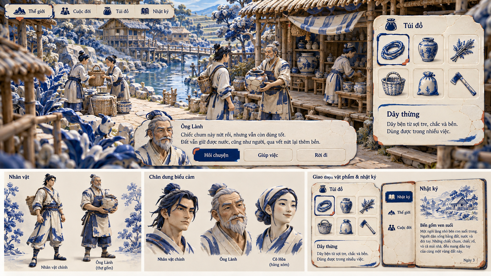

Men chàm và Bóng rối: hai hướng thử từ cảnh chơi tới hình người, chân dung, vật phẩm và giao diện. Số concept theo ý tưởng, không cố định thành ba phương án.
Bản concept tổng thể · UI trong ảnh là minh họa
BẢN THAM KHẢO ĐANG XEM
Men chàm

Men chàm thử nối bề mặt gốm, nét xanh chàm và khoảng sáng ngà từ nhân vật đến icon, khung hội thoại và túi đồ. Quan sát xem nét mặt và chữ có còn dễ đọc trong cùng chất liệu.
Toàn bộ giao diện game nằm trong ảnh raster. Chỉ các nút xem ảnh trên trang này có tương tác.
Chưa tải được ảnh. Kiểm tra thư mục assets của bản thử nghiệm 10.
Đang xem concept Men chàm.
Đổi concept bằng hai nút trên, phím 1 / 2 hoặc M / R. Mở toàn khung hoặc ảnh gốc để xem chữ, chân dung và icon lớn hơn. Cỡ chữ trang xem không làm chữ trong ảnh reflow.
THẾ GIỚI / TẠO HÌNH / CHÂN DUNG / VẬT PHẨM / UI
Một chất liệu, nhiều cách kể.
Xem cách cùng một ngôn ngữ đi qua cảnh chơi, cast, portrait, hội thoại, túi đồ và nhật ký. Khung trang giữ trung tính để artwork tự thể hiện phong cách được đề xuất.
GỐM MEN / XANH CHÀM VÀ TRẮNG NGÀ
Men chàm
Thử bề mặt gốm và nét chàm trên thế giới lẫn tạo hình. Bảng UI tìm khoảng nền phẳng để chữ và icon không chìm vào họa tiết men.
Muốn xem: con người có giữ biểu cảm và phẩm chất đời thường? Cảnh, vật phẩm và chữ có phân lớp rõ trong ngôn ngữ gốm?
HÌNH CẮT / BÓNG VÀ ÁNH SÁNG XUYÊN LỚP
Bóng rối
Thử silhouette và các lớp sáng tối như sân khấu bóng. Chân dung, vật phẩm và cửa sổ thông tin cùng tìm cách biểu đạt bằng nét cắt và ánh sáng.
Muốn xem: cử chỉ và gương mặt có đủ riêng biệt? Những lớp bóng có tạo chiều sâu mà vẫn đọc rõ lựa chọn và nhãn UI?
Thư viện tham khảo — mọi phiên bản được giữ lại
Hai hướng này bổ sung thư viện; số lượng có thể thay đổi theo ý tưởng. Các bản cũ vẫn có thể xem lại hoặc kết hợp, chưa tự xếp hạng, loại hoặc chốt thay bạn.